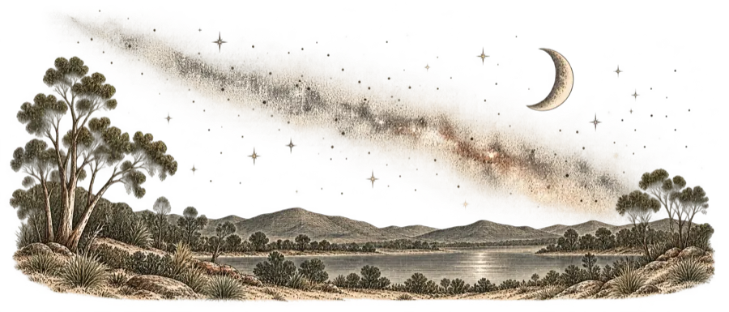
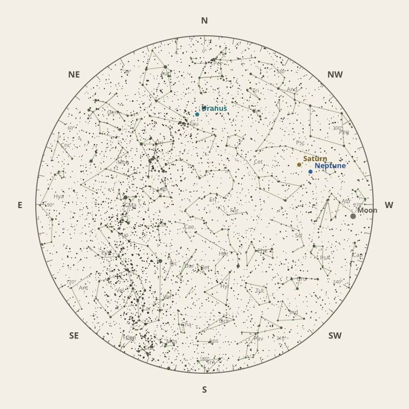
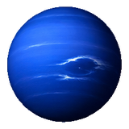
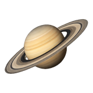
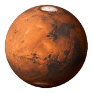

Monthly field almanac
December 2026


Geminids peak on 14 Dec 2026 under 22% Moon, with the radiant reaching about 23° before dawn.
- New Moon
- 9 Dec Darkest skies
- Full Moon
- 24 Dec Brightest skies
- Best dark window
- 5 Dec 9h 17m
Current conditions
Checking the sky near South East Queensland, Australia…
Sky chart: 15 Dec 2026, 10 pm
South East Queensland, Australia local time.
Show static monthly chart

Night planner
Choose a date to see astronomical darkness, Moon interference, Galactic Centre visibility, and planet altitudes and times.
Best low-Moon dark periods this month
- 6:59 pm–4:17 am9h 17m · 22% Moon
- 7:00 pm–4:17 am9h 16m · 14% Moon
- 7:01 pm–4:17 am9h 16m · 9% Moon

Galactic Centre sessions
No Galactic Centre session available this month.
Download Galactic Centre CSV →Events
- HIP 97602 lunar occultation7:08 pm; Moon at 25° altitude for the first listed contact.
- Neptune stationary pointApparent motion changes direction.
- HIP 101922 lunar occultation7:12 pm; Moon at 32° altitude for the first listed contact.
December highlights
- Planets
Saturn
Best monthly date at 62° altitude.
- Occultations
HIP 73588 lunar occultation
4:01 am; Moon at 12° altitude for the first listed contact.
- Planetary events
Saturn stationary point
Apparent motion changes direction.
- Meteor showers
Geminids
Peak conditions: 22% Moon illumination; 23° altitude predawn.
- Comets
Comet 11P
55° altitude; magnitude 17.5.


Moon phases
For faint deep-sky objects, observe when the Moon is below the horizon or weakly illuminated. For lunar relief, observe near the terminator; full Moon is best suited to ray systems and albedo features.
Download Moon phase CSV →

Planet visibility
Evening

Neptune5 Dec · 7:00 pm63° · Excellent
Saturn4 Dec · 7:30 pm62° · Excellent- Uranus26 Dec · 9:30 pm42° · Good
 Uranus
UranusPredawn

Mars31 Dec · 4:00 am52° · Excellent- Jupiter18 Dec · 4:00 am49° · Excellent
- Venus31 Dec · 4:30 am32° · Good
- Mercury13 Dec · 4:30 am5° · Poor
 Jupiter
Jupiter Venus
Venus Mercury
Mercury